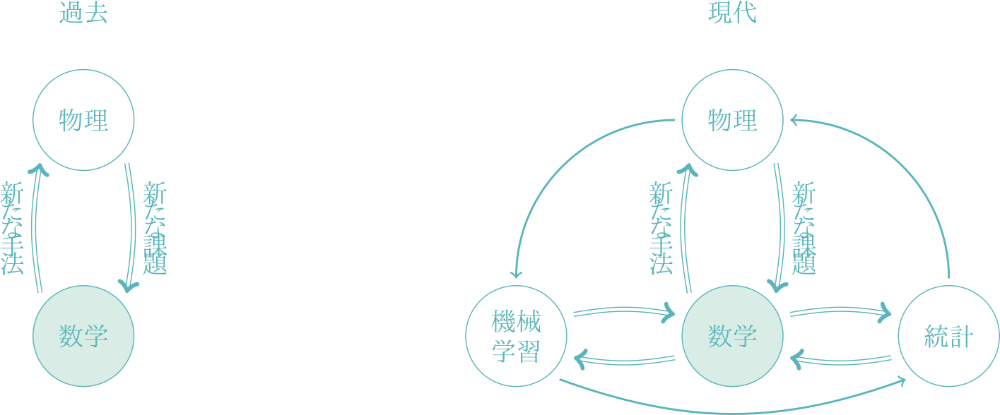

数学者のための統計力学２
小正準集団・正準集団・大正準集団
A Blog Entry on Bayesian Computation by an Applied Mathematician
$$
$$
現在，AI，専門的には機械学習と呼ばれる分野の研究と社会実装が急速に進んでいる．
機械学習は，元々は情報理論と計算機科学に源流を持つが，ロボティクス，コンピュータビジョン，認知科学，統計力学，統計学を巻き込んで，かつてないほど学際的な研究テーマとして雪だるま式に成長している．
特に，トランスフォーマーや状態空間モデルなどを取り入れた大規模な深層学習モデルは学術・産業の両面で大きな成功を見ている．同時に，大自由度モデルとしての深層学習モデルは，平均場理論をはじめとした統計力学の手法を通じての理論解析も進んでいる．
Tensor Programs (Yang, 2019) など，実際に応用に貢献できる理論も急速に発達してきている．この応用と理論の関係は，今後さらに密接になっていくだろう．
高次元統計学，情報統計力学などがキーワードとなっていくだろう．しかし筆者は，ここに新たなキーワードを提案したい．それは \(\mathcal{P}(E)\) である．

可測空間 \((E,\mathcal{E})\) に対して，その上の確率測度の全体からなる空間を \(\mathcal{P}(E)\) と表そう．有限な測度の全体 \(\mathcal{M}^1(E)\) は Banach 空間をなし，\(\mathcal{P}(E)\) はその閉凸集合である．
統計モデルとは，\(\mathcal{P}(E)\) の適当に切り出した部分集合をいう．例えば指数分布族のなす部分集合 \(\mathcal{P}\subset\mathcal{P}(E)\) などに注目し，その上の微分幾何的な構造を調べる分野は情報幾何学と呼ばれる．
このように統計学で \(\mathcal{P}(E)\) は重要な研究対象であるが，ベイズ統計学ではあらゆる不確実性の表現に確率分布を用いるため，特に重要な役割を果たす．事前分布を条件付けて事後分布を求める手続きは，\(\mathcal{P}(E)\) 上の写像を与えており，いわば \(\mathcal{P}(E)\) 上の（適切な）移動がベイズ推論といっても過言でないのである．
統計力学において，ランダムな系（時々刻々と物理量の確率分布が移り変わっていく系）は，\(\mathcal{P}(E)\) 上でみれば決定論的な系として解析できる．例えば，平衡分布とは \(\mathcal{P}(E)\) 上の力学系として見たときの不動点である．このような不動点は複数あり，実際，熱力学極限において等価な予測を与えるモデルは複数存在する．そのうち，計算しやすいものを選ぶのが統計力学の立場であり，統計学でいうモデル選択と対応する．このような統計的な問題を，古典的な推測統計の問題と対比して 順問題 と呼ぶこととする．1
機械学習では，統計的な逆問題を解くという問題意識を古典的な統計学と共有しており，特に \(\mathcal{P}(E)\) 上に真のデータ分布 \(P_0\in\mathcal{P}(E)\) を特定することを目標とする．しかし古典的なデータ解析の手法でこれを達成するのではなく，様々な尺度（汎函数 \(\mathcal{P}(E)^2\to\mathbb{R}\)）を通じて，\(P_0\) に最も近い分布を選び出すという原則を採る．この 乖離度 (divergence) と呼ばれる汎函数を最適化することにより，データ解析の手続きを自動化することが，機械学習に通底する精神である．
ここで筆者は，この \(\mathcal{P}(E)\) を中心に据えてこれらの分野を見渡してみると，物理学と機械学習の間に双対的な関係があると考える．

数学者 Mikhael Gromov によると，空間 \(X\) の解析学とは \(X\) 上の 関数の研究で，\(X\) の幾何学とは \(X\) への 関数の研究である (深谷賢治, 1997, p. 11)．2
だからといって何だというわけではないが，幾何と解析の，未知の対象 \(X\) へのアプローチの違いを上手く捉えた，大変簡潔な定義である．
いわば統計の 順問題 を解いてきたと言える．
（平衡）統計力学は系の統計的ふるまいを記述するために，正準集団を代表としていくつかの等価なモデルを用意しており，3 場合に応じて計算しやすいものを用いるというモデル選択の立場に立っていると言える．4
系の確率的なダイナミクスを予測するために (Metropolis et al., 1953) や (Glauber, 1963) の方法など，現在 MCMC として知られる重要なシミュレーション法が開発された．
つまり，現代ではベイズ統計学では事後分布からの推論手法として用いられる MCMC は，物理学においては「実際の系よりも高速に平衡に至るように設計された Markov ダイナミクス」として発明されたものであり，平衡分布の統計的な性質を調べようとするサンプリング法として開発されたということである．
MCMC の近年の発展はこちらの記事も参照：
基本的には統計的な逆問題，すなわちデータから背後の確率分布を推定する問題を解く．
だが，特に統計的な手続きを \(\mathcal{P}(E)\) 上の力学系を通じて自動化しようという志向が古典的な統計学と異なる．
ベイズ手法を例にとれば，推論を MCMC などのダイナミクスに任せるのではなく，KL-乖離度を最小にする最適化によって実行する（変分推論という）．
変分推論だけでなく，多くの物理学的な原理が，何かしらの汎函数の最小化問題として変分法的に理解されるのと同様，5 機械学習の多くのアルゴリズムは \(\mathcal{P}(E)\) 上の汎函数（特に KL-乖離度）の最適化問題として理解される．
こうして，\(\mathcal{P}(E)\) への写像 を志向する物理学と，\(\mathcal{P}(E)\) からの写像 を志向する機械学習の間に，基本的な立場の違いを見るのである．
そのためには，統計的な営みを \(\mathcal{P}(E)\) 上での数学的現象として捉え直し，物理学と機械学習の互いに双対的な２つの観点からの意味を比較考慮することが重要である．
そうすれば，ベイズ模型の物理的な意味を解析する場面と，高速なデータ解析を実行したい場面とに，明瞭な架け橋が渡されるのである．
統計的推論というダイナミクスを，変分原理の眼から捉える，情報の物理学になるかもしれない．変分原理に，かつてなかったベイズ推論としての意味や事前分布が明確化されることで，種々の推論アルゴリズムを統一的に理解することができるかもしれない．
このような観点から，\(\mathcal{P}(E)\) という共通言語を中心に据えて，物理学と機械学習の２つのアプローチを融和させる，新たな応用数学を建てたい．
| 物理的アプローチ | 機械学習的アプローチ | |
|---|---|---|
| 数学的内容 | \(\mathcal{P}(E)\) 上の幾何 | \(\mathcal{P}(E)\) 上の解析 |
| 統計的関心 | 順問題 | 逆問題 |
| ベイズ推論エンジン | MCMC | 変分推論 |
| 解析者 | 人間 | 計算機 |
現時点で筆者が集めている例は次のとおりである：
機械学習の過程が，相互情報量の最小化の過程として特徴付けられたのは (Ackley et al., 1985) 以来であるようである．
例えば，MCMC よりも多峰性に強いサンプリング法として期待されている テンパリング SMC 法6 は，最適化の観点からは，KL ダイバージェンスを 鏡映降下法 によって最小化した際の離散力学系と等価になると報告されている (Chopin et al., 2023)．
(樺島祥介, 2002, p. 4) に倣った．ここでは，「効率的な平均計算法の開発は統計力学ではエルゴード理論と同じくらい重要な意味を持つ」と，このような計算の問題を順問題と呼んでいる．そして，次のように続ける：「実のところ，歴史的に統計学は観測データからそれを生成した統計モデルを推定することで事実を説明する 逆問題 を中心に発展してきたという経緯があり，順問題 的な難しさが広く意識されはじめたのは計算機が発達し大規模な統計モデルが盛んに用いられるようになった比較的最近のことである．」↩︎
同講義録 (深谷賢治, 1997, p. 12) にて，平面幾何とは，例えば円とは \(S^1\hookrightarrow\mathbb{R}^2\) なる写像を調べるもの，\(\mathbb{R}^2\) 上の解析とは，\(f(x,y)\) などの２変数関数を調べる，という例を挙げている．↩︎
主な目標が熱力学極限にあり，この極限において等価な予測を与えるモデルとして等価である，という意味である (田崎晴明, 2008, p. 333) など．↩︎
幾何光学における Fermat の原理から懐胎されていたアイデアであり，解析力学の最小作用の原理に代表され，同様の原理は量子力学，電磁気学など多くの分野で通用する．↩︎